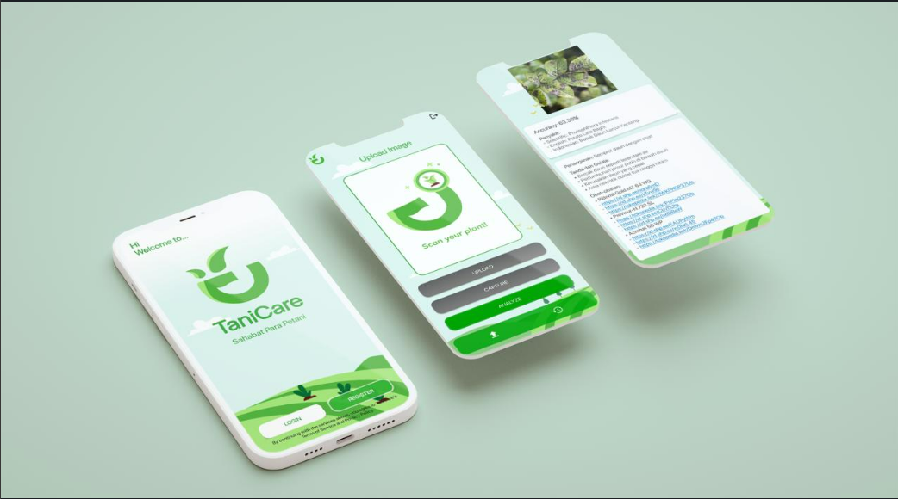
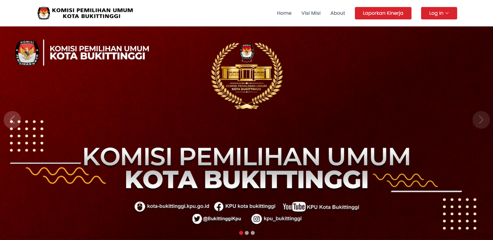

Software & Data
Engineer.
Membangun aplikasi web berkinerja tinggi, arsitektur basis data yang andal, dan visualisasi data yang intuitif.
Halo, saya Rahmat Fadhil Syauqy.
Saya merupakan lulusan program studi Teknik Informatika dari Institut Teknologi Sumatera (ITERA). Berbekal minat mendalam terhadap inovasi teknologi, saya menspesialisasikan diri pada integrasi pemrograman web yang dinamis, pemrosesan basis data yang andal, serta visualisasi data yang mudah dipahami.
Di luar baris kode, saya aktif dalam organisasi dan manajemen proyek kolaboratif, memastikan bahwa produk yang dibangun tidak hanya berfungsi secara teknis, tetapi juga memberikan solusi praktis bagi pengguna.
Keahlian Teknis
Kumpulan teknologi yang saya gunakan dalam membangun sistem.
Web Development
Membangun aplikasi web interaktif, responsif, dan optimal menggunakan arsitektur modern serta manajemen state yang efisien.
Manajemen Basis Data
Merancang skema database yang dinormalisasi, mengoptimasi kueri kompleks, serta mengelola integritas data.
Visualisasi & Data
Menyajikan kumpulan data rumit menjadi representasi visual/dashboard grafis yang interaktif, intuitif, dan komunikatif.
Karya Pilihan
Implementasi dari kode dan rekayasa data.

Sistem POS Toko Merapi
Aplikasi point-of-sale menyeluruh yang mengintegrasikan manajemen inventaris, pemrosesan transaksi penjualan real-time, dan laporan keuangan yang divisualisasikan dengan elegan.

Tani Care
Aplikasi berbasis kecerdasan buatan (AI) yang mendeteksi gejala penyakit tanaman secara akurat melalui analisis visual pada daun, di-*deploy* menggunakan infrastruktur Cloud.

Sistem Laporan Kehadiran KPU
Platform manajemen sumber daya manusia internal yang merampingkan proses pelaporan, pelacakan, dan autentikasi kehadiran karyawan secara terpusat dan efisien.
Eksplorasi Lainnya
Lihat semua di GitHubGame MbakTembak
Proyek game 2D interaktif yang dikembangkan sepenuhnya (100%) menggunakan bahasa pemrograman Python. Mengimplementasikan konsep Pemrograman Berorientasi Objek (OOP) untuk merancang logika permainan, manajemen antarmuka (UI), serta variasi state animasi karakter secara dinamis.
SIG Rawan Gempa Sumbar
Sistem Informasi Geografis (SIG) interaktif yang memetakan titik-titik lokasi rawan gempa bumi di wilayah Provinsi Sumatera Barat. Dilengkapi fitur manajemen data spasial untuk admin dan tampilan peta visual untuk pengguna umum.
Web Manajemen Pengguna
Aplikasi web dinamis untuk pengelolaan data (CRUD) yang terintegrasi dengan database dan sistem autentikasi. Menyoroti fitur pelacakan IP Address pengguna untuk keamanan, serta validasi form interaktif yang dibangun menggunakan pendekatan Object-Oriented Programming (OOP) pada JavaScript.
Mari Berkolaborasi.
Tertarik untuk membangun solusi teknologi bersama? Saya terbuka untuk diskusi inovatif, proyek kolaborasi, maupun rekrutmen profesional.